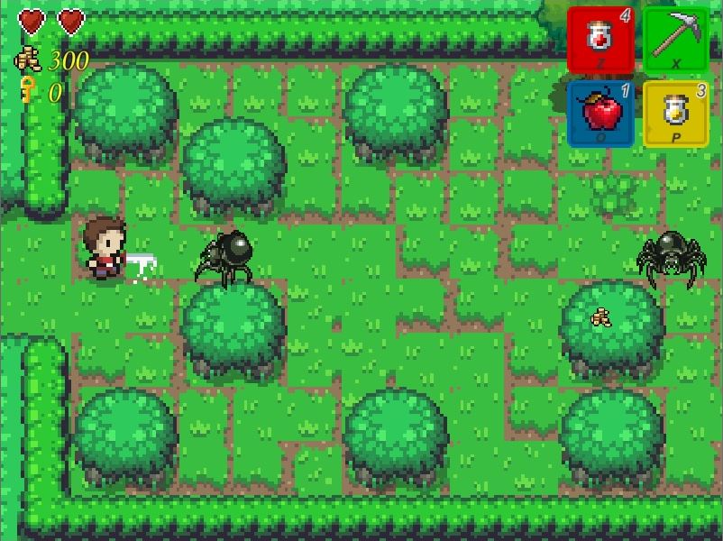
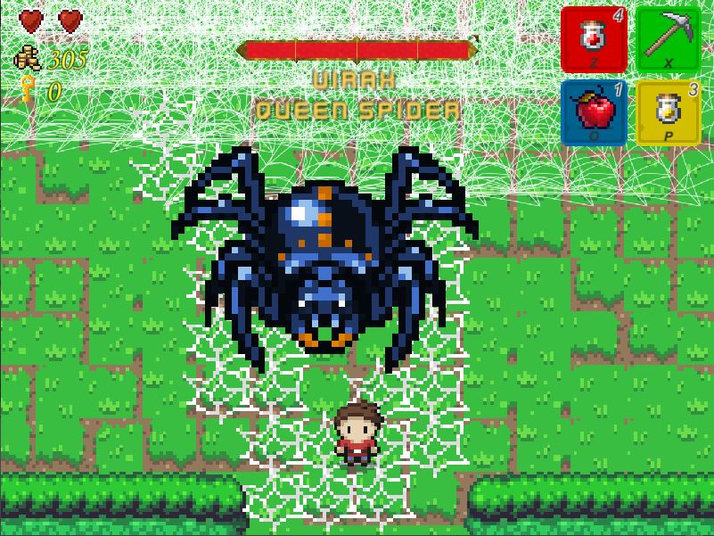

<section class="resume-section p-3 p-lg-5 d-flex flex-column" id="projects">
  <div class="my-auto">
    <h2 class="mb-5">Projects</h2>
    <div id="project-traveler">
      <h3>The Traveler of Mundor</h3>
      <p>The Traveler of Mundor is a Top-Down 2D RPG developed soley by me. It has been my passion project for the last 4 years, but it's roots run much deeper than that.</p>
      <p>
        It started out as a text based RPG game that I developed in 2015 as my first tutorial into C#. Following <a href="https://scottlilly.com/learn-c-by-building-a-simple-rpg-index/">Scott Lilly's Guide to C#</a> I eventually had this neat little RPG game with an inventory, quests, different locations to visit, and even combat.
        But it just wasnt enough. Over the next year I expanded the game, adding chests, NPC's, unique items with custom functionality, and more locations including 7 dungeons. After I started adding the 8th dungeon, I took a step back from the project and examined it hard.
        I decided that the project was just in a state of disrepair. The code was messy, it was cumbersome to do things, and honestly the whole game could probably have been beaten in an hour. So what did I do? Started from scratch of course!
      </p>
      <p>
        I created an entirely new project, called it 2.0, and began to rewrite everything. Not only did I rework the code to make it scalable and have a sleeker UI, but I began to implement even more features like multiple save files with a start menu, as well as expanding the content 10 fold.
        Over the next few years I worked on this version of the game, expanding on the content as I worked through reworking every aspect of the code. I took breaks here and there, but I pretty much put the project on hold when I started my final year of college. Over the next year I spent all of my time working on Virtual Marketplace, my capstone project.
        While this did put a hold on developing my game, it taught me something else instead. It taught me how to use Unity.
      </p>
      <p>
        A few months after I graduated, I decided to take the knowledge I had learned and use it to turn my game into what I always envisioned it to be. Following this <a href="https://www.youtube.com/playlist?list=PL4vbr3u7UKWp0iM1WIfRjCDTI03u43Zfu">series of tutorials</a> by MisterTaftCreates,
        I once again did I what did in 2015. Along the way through the tutorial, I started adding my own content. First it was chests, then NPC's and quests; before I knew it I was developing my game without needing the tutorial anymore. I started creating all the UI's, implementing unique items, and I even rewrote my entire backend engine.
        Before in both versions 1 and 2, the data for the games objects (NPC's, quests, chest contents, items, equipment, etc...) was all in code. I wanted to break away from that use data files to store the data, and then have an engine that could read any file and output it to a common type that the game could then access easily.
        I ended up transferring all the game data into XML files and wrote some code that could read any of them and create each node as a custom class I call WorldObject. This WorldObject is essentially an extended Dictionary where the key is a string and the value could be anything; a primitive type, an object/list of objects, or even another WorldObject.
        In order to manage these files I created another WinForms app called GameDataEditor (see below) that allows me to edit the XML files in a GUI format, without having to sift through them in Notepad++.
      </p>
      <p>
        4 years later and I am still developing this game. I am currently working on implementing the 3<sup>rd</sup> dungeon and hope to have it completed within the next couple months. If you wish to check out the game, I have a version that is ready to be tested, send me an email and I will send you the download link.
      </p>
      <ul class="list-inline">
        <li class="list-inline-item">
          
        </li>
        <li class="list-inline-item">
          
        </li>
        <li class="list-inline-item">
          
        </li>
      </ul>
    </div>
    <hr/>
    <div id="project-vm">
      <h3>Virtual Marketplace</h3>
      <p>
        Virtual Marketplace was my college capstone project. Developed by me, and two others, it was a virtual reality shopping center. The idea was to merge the convenience of online shopping, with the tangibility of a brick and mortar store. I was the sole software developer on the team so it was a lot of work developing the suite of applications we had for our project.
        Not only did we have the VR application, which was done in Unity3D with C#, but we also had a website that would track your transactions made within the application, as well as a handful of other applications to make everything run smoothly. Continue on to learn more about each component of this project.
      </p>
      <div class="subheading mb-3">The Unity Application</div>
      <p>
        As stated Virtual Marketplace was ultimately a VR application built using Unity3D and C#. In order to get Unity to utilize the VR headset we had to download some 3<sup>rd</sup> party packages. Namely, we used Steam VR and VRTK (Virtual Reality Toolkit). However, there was custom code that needed to be written, and thats where I came in.
        I was able to write the code to hook up our logic to the different buttons on the VR remote. In order for our logic to work though, I had to come up with a bit of a creative solution. You see, being a bit of a novice developer at the time I struggled adding a 3<sup>rd</sup> party DLL to our project, specifcally DLL's needed to do database operations.
        Because of this, I ended up writing a console app that I called Virtual Marketplace Database, or VMDB for short.
      </p>
      <div class="subheading mb-3">Virtual Marketplace Database</div>
      <p>
        VMDB was a console application that came bundled with the Virtual Marketplace download. It was designed to accept database commands, in the form of an argument string, from the Unity application and then run those commands. If the Unity application needed to retrieve data, VMDB would build an XML file of the results. The Unity application would be listening for that file and once it was there, would act upon it.
      </p>
      <div class="subheading mb-3">vrmarketplace.club</div>
      <p>
        I mentioned earlier we also had a website that was used to track the transactions made within the Unity application. Built using C#, ASP.NET MVC, effectively, the website was a full on customer portal. Users were asked to create an account where they could enter in all their information such as personal, shipping and even billing information. From there they could then access the full site which featured a few sections about the project and its designers,
        as well as the section to track your transactions and see purchase receipts. The website also served as the download point for the application itself. Which brings me to the final application in the suite, the Virtual Marketplace Launcher.
      </p>
      <div class="subheading mb-3">Virtual Marketplace Launcher</div>
      <p>
        The Launcher program was my way of getting the user to sign into their account so they could then shop in the Unity application. Rather than build a UI in Unity and force the user to use the VR remote to sign in, I built a wrapper program that simply prompted the user for their username and password on startup. If the entered credentials authenticated against our database, the Unity application would then launch and the customer's ID number would be passed forward.
        All in all it was a simple application that served a simple but crucial purpose to the project.
      </p>
      <p>
        In the end Virtual Marketplace was a success. It was well received by our professors and peers, and we received an A on the project for our efforts.
      </p>
      <ul class="list-inline">
        <li class="list-inline-item">
          <iframe class="project-iframe" src="https://www.youtube.com/embed/BAl8v0cUgMQ" allowfullscreen webkitallowfullscreen mozAllowFullScreen></iframe>
        </li>
        <li class="list-inline-item">
          <iframe id="kaltura_player" class="project-iframe" frameborder="0" title="Kaltura Player"
                    src="https://cdnapisec.kaltura.com/p/1492301/sp/149230100/embedIframeJs/uiconf_id/22790551/partner_id/1492301?iframeembed=true&playerId=kaltura_player&entry_id=1_apm9ucaa&flashvars[streamerType]=auto&amp;flashvars[localizationCode]=en&amp;flashvars[leadWithHTML5]=true&amp;flashvars[sideBarContainer.plugin]=true&amp;flashvars[sideBarContainer.position]=left&amp;flashvars[sideBarContainer.clickToClose]=true&amp;flashvars[chapters.plugin]=true&amp;flashvars[chapters.layout]=vertical&amp;flashvars[chapters.thumbnailRotator]=false&amp;flashvars[streamSelector.plugin]=true&amp;flashvars[EmbedPlayer.SpinnerTarget]=videoHolder&amp;flashvars[dualScreen.plugin]=true&amp;&wid=1_vx468cbo"
                    allowfullscreen webkitallowfullscreen mozAllowFullScreen>
            </iframe>
        </li>
      </ul>
    </div>
    <hr/>
    <div id="project-work">
      <h3>Work Projects</h3>
      <div class="subheading mb-3">Product Model Set Tool 2.0</div>
      <p>
        This was the first big application I worked on professionally. I started out maintaining version 1.0 of the app but during the second semester of my internship, my mentor got permission to rewrite the app from scratch using WPF instead of WinForms. Since it was just him and I working on this app, the contributions I made are endless. To this day this app is still used by other developers to model insurance data.
      </p>
      <div class="subheading mb-3">Automated Branching Tool (Branchinator 5000)</div>
      <p>
        This was the first big application I wrote as a Developer I. We had a process in place for creating what we called Feature branches in TFS. These branches were for teams to use if they were to make big, system breaking changes that required multiple check-ins and rigorous testing. My first responsibility was to be in charge of creating/refreshing these branches for other developers when needed.
        The manual process took about an hour, and my application took that down to about 25 minutes on average. While thats not a huge time gain, it required zero interaction apart from starting the process through the application. Plus the application let you queue multiple branch creations at once making it very easy to create multiple branches.
      </p>
      <div class="subheading mb-3">eCLAS Development Manager</div>
      <p>
        This tool was designed to make it easier for developers to navigate through our source control to find the solutions they needed. Traditionally, developers would have to open Visual Studio and navigate through source control to find the solution they wanted to open. I found this to be cumbersome and, frankly, I didnt always know which sub-folder the solution I needed was hidden away in.
        Therefore, I developed an application that, when opened, presented the user with a list of all solution's within the current directory they were pointing to. From there, all that they had to do was double click an item in the list and it would open that solution in Visual Studio. The list was designed to be multi-selectable as well meaning if the user wanted to open multiple solution's, all they had to do was select them and then click the Open Solutions button at the bottom.
        While the core application was simple, I added a couple features which really made it a full fledged app. The first one I added was the ability to create solution presets. I found myself opening the same solution, or set of solutions, all the time so I created presets to be able to easily open these solutions with one click. With presets, it allowed me to create the next feature. I wanted to be able to access the application from the Windows app tray, because I wanted to make it even easier to access my presets.
        By making it an app tray application, I could right click on it and easily select my preset from the menu. This made getting me to where I needed to be lightning quick.
      </p>
      <div class="subheading mb-3">eCLAS Change Report Tool</div>
      <p>
        This was my favorite project I worked on so far at CIC. Two coworkers of mine were responsible for generating a spreadsheet, each week, that contained differences between specific database snapshots and XML files. Depending on the number of differences this spreadsheet could take them anywhere from a day to the whole week to make. They came to me asking me to automate the process for them as they did not have the time to do it themselves, due to other work they were doing.
        In order to compare the database snapshot files, I used Red Gate Sql Compare's automated version to generate the difference report. I then wrote code to parse the report and generate a custom class of differences which the spreadsheet piece could consume. In order to compare the XML files, I tried to use a text comparison tool called Beyond Compare. Unfortunately, the difference report was not extensive enough for my purposes. Ultimately, I ended up writing my own custom XML comparison logic.
        Finally, after both comparisons had been ran, the spreadsheet would be generated. It was a running spreadsheet so I had to append data to the existing one; we started a new one each build. I used existing Microsoft libraries to write to Excel. In the end my application was a console application that could be set through Windows scheduler to run once a week. It took 2 minutes on average to run and saved my fellow developers countless hours of work each week.
      </p>
      <div class="subheading mb-3">Automated DR Portal</div>
      <p>
        This was my first angular project I worked on at CIC. I was tasked with helping to build an Angular app designed to automate our DR testing process. I implemented many features from, rewriting the backend database code to use ORM technology, to error logging, to various other necessary features. Overall the app was a huge success.
      </p>
      <div class="subheading mb-3">Headcount Portal</div>
      <p>
        This was the application that I was the technical lead on. I had a team of 6 interns and we were tasked with developing an Angular app for tracking employee headcount. I delegated out each parts of the work to the team; 2 on UI, 2 on backend, and 2 on database construction.
        While it was tricky mentoring 6 interns at the same time, it was an experience I will always remember.
      </p>
      <div class="subheading mb-3">Cinergy<span>&#8480;</span></div>
      <p>
        This is the project I am currently working on; which I have been working on since 2020. At first I was placed on the backend API team called the Platform team. I did various minor updates, but my biggest contribution was implementing a way to convert certain data to PDF format. I leveraged Microsoft libraries along with the Print to PDF capabilities to generate a dynamic PDF on the fly. A few months into my Platform tenure, I was placed on a side project within the Cinergy space. I was to take over the maintenance of an XSLT file used for translating our systems's data to the company wide data format.
        I am still actively maintaining this stylesheet. I spent a few months working on nothing but the stylesheet, whittling down the backlog of items that needed done. Eventually, I reached the end. Once that happened I was placed on the UI team. I immediately began helping with design updates and continued to do design updates for quite some time.
        Shortly after I was promoted to Developer III, I was given an intern to mentor who I am actively mentoring. Currently, I am apart of the combined Framework team. I've done various tasks to improve our application but my biggest contribution has been helping to migrate our backend API from .NET Framework to .NET 7.
      </p>
      <!--Commented out as I do Im not sure if I wanted to mention IMPACT-->
      <!-- <div class="subheading mb-3">IMPACT Intiative</div>
      <p>
        IMPACT was an initiative started by a fellow developer of mine which was designed to get people cross trained, not just across teams, but across the entire organization. The idea was we
      </p> -->
    </div>
    <hr/>
    <div id="project-other">
      <h3>Other Projects</h3>
      <div class="subheading mb-3">TOM Game Utility</div>
      <p>
        This is my utility project that I developed for my game. It houses a handful of useful applications, such as, a backup program for saving all game files to Dropbox, a startup program that starts all necessary development programs for making the game, and the biggest project, the GameDataEditor.
        The GameDataEditor is a WinForms app written in C# that is designed to edit the The Traveler of Mundor's game files in a simple GUI format. I searched online for a free editor but could not find what I was looking for so I decided to build my own.
        When opened, the editor presents you with a dropdown to select which file to edit. Selecting a file will load the XML as a TreeView below the dropdown. You can then select a node to view. By clicking on the node, the main editor window will populate with a customized UserControl based on which type of file is being edited.
        There is also a second tab to view the raw XML data of the selected node. Finally, I also implemented a few features to make it easier to manipulate the game files, such as, a customized Search window based on what file you are editing on any file, various ways to manipulate the XML from adding to deleting nodes to adding an entire new property in the XML file,
        and the ability to mass edit properties all at once. All in all, it is an extremely useful tool and has become crucial to the development of my game.
      </p>
      <div class="subheading mb-3">Authentication API</div>
      <p>
        This project was one I made in college as a simple way to authenticate a users information against a set of rules. I got tired of writing the same logic to check if a username was blank or had illegal characters, so I developed an API that I could pass rules too that would then run against whatever information was being passed in.
        I even implemented geo-location checking for address validating. In the end it was a simple DLL file that I could import into any project I needed.
      </p>
      <!--Commenting this out as im not sure i want to mention it-->
      <!-- <div class="subheading mb-3">TehBoxGame</div>
      <p>
        TehBoxGame (spelling error sort of intended), was a small game I developed following a tutorial on how to make a basic game in C# with Winforms. It uses built in Microsoft libraries to draw the game objects to the screen.
      </p> -->
    </div>
  </div>
</section>
